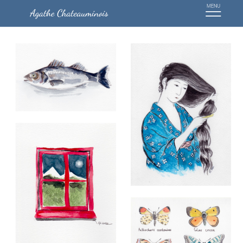
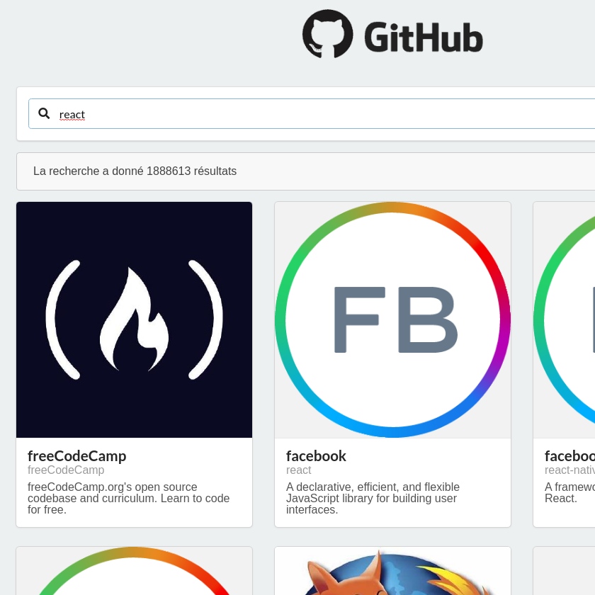
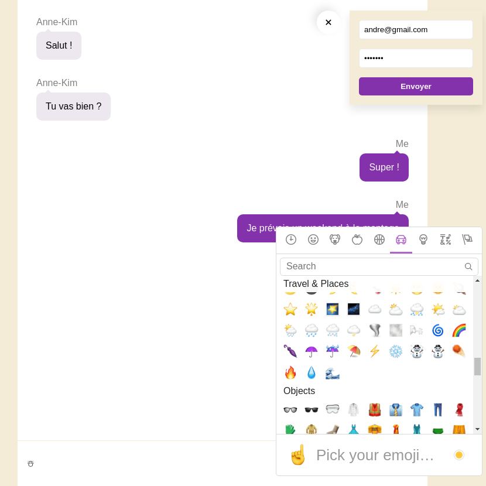

A propos
Après 7 années en ingénierie à côtoyer des développeurs, j'ai découvert toute la richesse du monde du web, et j'ai voulu en faire mon métier.
En 2020, j'ai franchi le pas en quittant mon poste d’ingénieur et en intégrant la formation Javascript fullstack (React – Node) au sein de l'école O'Clock, formation en Téléprésentiel labellisée Grande Ecole du Numérique. Mon objectif est d’obtenir la certification OPQUAST et le titre professionnel développeur web et web mobile au printemps 2021.
Je suis très heureuse de mon parcours jusqu'ici !!!
J’ai aujourd'hui hâte de mettre en pratique mes compétences, et d'en apprendre davantage, tout en travaillant sur des projets stimulants au sein d'une entreprise bienveillante. Mes précédentes expériences font de moi une personne adaptable, qui sait travailler en équipe et qui comprend les enjeux d'un projet.
Je suis disponible à partir d'avril 2021, et ouverte à une proposition de stage. J’affectionne le front et particulièrement REACT mais m’ouvrir sur d’autres librairies/frameworks ou approfondir mes compétences en back me raviront tout autant.
Projets
Site vitrine de peintures en aquarelle
Description : Site vitrine.
Techno : Javascript, HTML, CSS
Recherche de repos GitHub
Description : Réalisation d'un annuaire permettant de rechercher des repos GitHub via leur API.
Techno : React, Axios, Semantic UI
Chatroom
Compétences
Techniques
- Javascript
- HTML, CSS
- React, Redux
- Node, Express
- SQL, PostgreSQL
- Git
- Excel, VBA
Langues
- Anglais Niveau B1
(TOIEC 865) - Espagnol Niveau A1
Autre
- Gestion de projet
- Méthode Agile
Formations
Développeur Web - Web Mobile Javascript - O'Clock
Du 05 Octobre 2020 au 23 Mars 2021, 735 heures
Formation en téléprésentiel, labélisée Grande Ecole du Numérique, préparant au Titre Professionnel “Développeur Web et Web Mobile”, diplôme de niveau 5 (Nomenclature Europe) correspondant au niveau III (Nomenclature de 1969) et inscrit au Répertoire National de la Certification Professionnelle (RNCP).
- > 3 mois de socle : environnement Linux, HTML, CSS, Git, javascript, Node.js, Express, SQL, AJAX, API Rest, ORM Sequelize, Programmation Orientée Objet, Architecture MVC, méthodes Agile
- > 1 mois de spécialité React : Webpack, Babel, ESlint, test unitaire (Mocha, Chai, Enzyme), Sass, Redux
- > 1 mois de projet
Ingénieur Sciences et Technologie de l'Eau - Polytech Montpellier
2011 - 2014
Cycle préparatoire Sciences et Techniques - Polytech Nantes
2009 - 2011
Expérience
Développeuse Web - O'Clock
Février 2021 - 4 semaines
- > Objectif : développer une application web pour des profils techniques, dédiée à l'accessibilité numérique afin d'apprendre et s'exercer
- > Equipe de 4 personnes
- > Méthodologie Scrum
- > Techno : React, Redux, Node Js, Express, PostgreSQL, Sass, Webpack
Ingénieure - Predict Services (Castelnau-Le-Lez)
2013 - 2020
- > Chargée d’affaire auprès du Groupe Groupama : mise à disposition d’un service d’assistance à la gestion des risques hydrométéorologiques (application web et mobile). Gestion de projet, méthode agile, récolte des besoins clients, tests interfaces web, suivi des développements web, traitement des données via excel et VBA
- > Expertise des événements hydrométéorologiques et accompagnement des usagers (collectivités, entreprises) dans leur prise de décision en phase de gestion de crise 24h/24 et 7j/7 Gestion du stress, adaptabilité, communication
Chargée d’étude statistique - stage 3 mois - NIWA (Nouvelle Zélande)
Eté 2012
> Analyse de performance d’un modèle inondation Statistique et programmation sous R
Centre d'intérêts
Je pratique l'équitation plusieurs fois par semaine et j'apprécie la photographie et les randonnées. Mais de nature curieuse, j'ai exercé plusieurs activités dont le piano, l'aquarelle, l'escalade, le football, la danse salsa,...